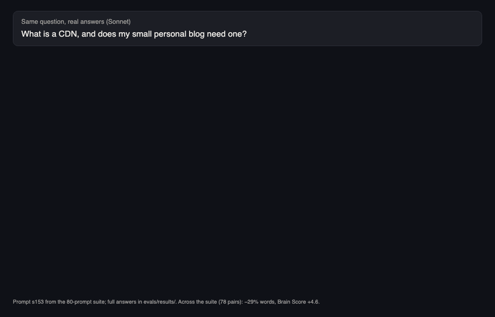

🧠 brainres
Claude answers your brain can actually read. Measured on 80 prompts: answers came out 29% shorter and Brain Score rose 4.6 points, at a cost of 1.8 pp less detail.

- Brain Score playgroundPaste any answer and get its score. Nothing is uploaded.
- Reading benchmark · 읽기 벤치마크5 minutes, anonymous. Do people really understand these answers faster?
- GitHubSource, research ledger and evals · 한국어
claude plugin install brainres --marketplace wonjangcloud9/brainres